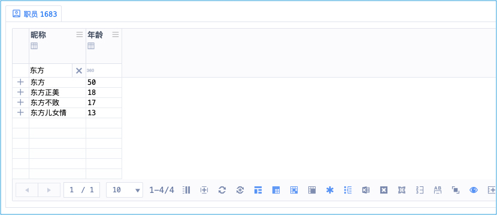

陈桥密语
简称：密语
诗
《陈桥密语》
数星一问终是等，感叹前非后不空。
五字首拼知我意，小数大数横线中。
数星：数个字符用星号(*)表示
一问：一个字符用问号(?)表示
终是等：终，句号。是等，是相等的意思。句号是相等的意思
感叹前非：感叹号放前面，表示：逻辑非
后不空：感叹号放后面，表示：不要空行
五字首拼知我意：最多五字的首拼，系统知道你的意思
小数大数：<某数字 <=某数字 >某数字 >=某数字
横线中：17-18 13-20
陈桥密语

此功能画面太多，图片不足以表现，抖音西瓜、微信的视频号，搜 ca3wBEST / ca3w麦修行 看视频
| 口诀 | 机理 | 搜索词 | 可以搜到 | 不可以搜到 |
|---|---|---|---|---|
| 数星 | 等同搜索 东方* | 东方 | 东方 东方正美 东方不败 江湖儿女情 | 日出东方 |
| 数星 | 等同搜索 东方 | 东方* | 东方 东方正美 东方不败 江湖儿女情 | 日出东方 |
| 数星 | *方*败 | 东方不败 | 唯我不败 | |
| 一问 | 东方?? | 东方正美 东方不败 | 东方 江湖儿女情 | |
| 一问 | 东方??? | 江湖儿女情 | 东方 东方正美 东方不败 | |
| 终是等 | 等同搜索 东方。 | 东方. | 东方 | 东方正美 东方不败 江湖儿女情 |
| 终是等 | 等同搜索 东方. | 东方。 | 东方 | 东方正美 东方不败 江湖儿女情 |
| 感叹前非 | !东方 | 日出东方 | 东方 东方正美 东方不败 江湖儿女情 | |
| 后不空 | 东方! | 东方 东方正美 东方不败 江湖儿女情 | 不要空行] （高维表中的空行） | |
| 五字首拼知我意 | dfz | 东方正美 颠覆者 | 东方 东方不败 江湖儿女情 | |
| 五字首拼知我意 | dfzm | 东方正美 | 东方 东方不败 江湖儿女情 颠覆者 | |
| 小数大数 | < 16 | 17 18 50 51 | 3 | |
| 小数大数 | <20 | 13 17 18 | 0 51 | |
| 横线中 | 17-18 | 17 18 | 3 50 51 | |
| 横线中 | 13-20 | 13 17 18 | 0 51 |
雕栏破碎中的搜索附加说明：
| 表示 OR（或） 有一个条件具备就可以
& 表示 AND（与） 必须同时具备
示例：
搜索词：「东方不败. | 令狐冲.」（不含「」、括号中的）
搜到的审核组：
东方不败￢服部千军￢猿飞日月
东方不败￢诗诗
令狐冲￢任盈盈￢岳灵珊
搜索词：「东方不败. & 令狐冲.」（不含「」、括号中的）
搜到的审核组：—— 必须同时有 东方不败 和 令狐冲
东方不败￢令狐冲
东方不败￢令狐冲￢任我行
正常每个元素应该以点结尾，表示结束（终是等），但如果不以点结尾：
搜索词：「东方 | 令狐冲.」（不含「」、括号中的）
那这个 东方 会被系统理解为：以 东方 开头
搜到的审核组：
东方不败￢服部千军￢猿飞日月
东方不败￢诗诗
令狐冲￢任盈盈￢岳灵珊
东方正美￢莫言
现实世界
认证机构信息管理系统 中的 「搜素约定」
武侠世界
神影门暗语
在第一次营救行动中，神无极弃暗投明，为掩护撤退而牺牲
神无极临终之际将《神驭虚界》、《陈桥密语》、「神影令牌」交给了穿越主（审核员东方正美）
自学到什么程度
只需知道：这个系统，所有搜索是有标准的、是统一的标准
实际用的时候再琢磨，聪明的你马上就会了，操作非常简单
术语对照
| 武学术语 | 系统术语 | 说明 |
|---|---|---|
| 陈桥密语 | 搜素约定 | 搜素规则 |
作者笔记
你必须花点时间，学会数据搜素约定
所有地方都适用，非常可靠一学百用